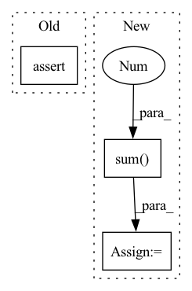

Pattern ID :1447

Before Change
d2val = d2val.permute(1, 2, 0, 3).sum(1)
assert(torch.allclose(d2val.sum(-1),
d2val_grad.view(self.nbatch, self.wf.nelec, 3).sum(-1)))
def test_local_energy(self):
After Change
assert(torch.allclose(d2val.sum(), d2val_grad.sum()))
d2val = d2val.sum(0).sum(-1)
d2val_grad = d2val_grad.view(
self.nbatch, self.wf.nelec, 3).sum(-1)
assert(torch.allclose(d2val, d2val_grad))
def test_local_energy(self):
In pattern: SUPERPATTERN
Frequency: 3
Non-data size: 3
Instances
Fragment ID: 6699462
Project Name: nlesc-jcer/qmctorch
Commit Name: 8756495ec9fbcfd6eaae6b05c27de51c8e6d15b5
Time: 2021-04-13
Author: nicolas.gm.renaud@gmail.com
File Name: tests/wavefunction/test_slaterjastrow_backflow.py
M Class Name: TestSlaterJastrowBackFlow
N Class Name: TestSlaterJastrowBackFlow
M Method Name: test_hess_mo(1)
N Method Name: test_hess_mo(1)
M Parent Class: unittest.TestCase
N Parent Class: unittest.TestCase
M File Name: tests/wavefunction/test_slaterjastrow_backflow.py
N File Name: tests/wavefunction/test_slaterjastrow_backflow.py
M Start Line: 130
M End Line: 137
N Start Line: 133
N End Line: 136
'>
Before Change
d2val_grad = hess(val, self.pos)
d2val = self.wf.pos2cmo(self.pos, derivative=2)
assert(torch.allclose(d2val.sum(), d2val_grad.sum()))
assert(torch.allclose(d2val.sum(-1).sum(-1),
d2val_grad.view(self.nbatch, self.wf.nelec, 3).sum(-1).sum(-1)))
After Change
d2val_grad = hess(val, self.pos)
d2val = self.wf.get_hessian_operator(self.pos)
d2val = d2val.permute(1, 2, 0, 3).sum(1)
assert(torch.allclose(d2val.sum(-1),
d2val_grad.view(self.nbatch, self.wf.nelec, 3).sum(-1)))
'>
Fragment ID: 6699463
Project Name: nlesc-jcer/qmctorch
Commit Name: a021a83abc01bb42653765ae3bdae08ade39dc02
Time: 2021-01-19
Author: nicolas.gm.renaud@gmail.com
File Name: tests/test_wavefunction_generic_correlated_orbital.py
M Class Name: TestCorrelatedOrbitalWF
N Class Name: TestCorrelatedOrbitalWF
M Method Name: test_hess_cmo(1)
N Method Name: test_hess_cmo(1)
M Parent Class: unittest.TestCase
N Parent Class: unittest.TestCase
M File Name: tests/test_wavefunction_generic_correlated_orbital.py
N File Name: tests/test_wavefunction_generic_correlated_orbital.py
M Start Line: 182
M End Line: 182
N Start Line: 165
N End Line: 166
'>
Before Change
assert(torch.allclose(dcmo.sum(), dcmo_grad.sum()))
try:
assert(torch.allclose(dcmo.sum(-1), dcmo_grad.sum(-1)))
except:
print(" === Warning test_grad_cmo partial sum is failing")
After Change
assert(torch.allclose(dcmo.sum(), dcmo_grad.sum()))
try:
a = dcmo.sum(-1).sum(-1)
b = dcmo_grad.sum(-2)
assert(torch.allclose(a, b))
except:
'>
Fragment ID: 6699466
Project Name: nlesc-jcer/qmctorch
Commit Name: 8607a8d2209f34ff86baa8fc45c805e7b037323f
Time: 2020-11-26
Author: nicolas.gm.renaud@gmail.com
File Name: tests/test_wavefunction_generic_correlated_orbital.py
M Class Name: TestCorrelatedOrbitalWF
N Class Name: TestCorrelatedOrbitalWF
M Method Name: test_grad_cmo(1)
N Method Name: test_grad_cmo(1)
M Parent Class: unittest.TestCase
N Parent Class: unittest.TestCase
M File Name: tests/test_wavefunction_generic_correlated_orbital.py
N File Name: tests/test_wavefunction_generic_correlated_orbital.py
M Start Line: 165
M End Line: 171
N Start Line: 164
N End Line: 173